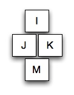

The tabs at the top of this page can be re-ordered using the keyboard.
Use the Tab key to move focus to the collection of tabs. You can tell when focus arrives there because the current tab will change to a white background.
Once focus is on the tab group, you can select a tab to move and move it using the following keys:
| Selection Keys | Modifiers for movement |
|---|---|
 | |
|  | |
- Soft creamy white wood that is easy to work and glues into larger block very well.
- It has no figuring, with a fine straight even grain, the sapwood is almost white.
- Carves well and is excellent for detail work.
- Very light weight.
- Basswood is used in carving, turning, and toy making.
- Much lighter in weight than black walnut, this wood has a medium fine straight grain than is a golden brown tone to a reddish brown at the sapwood.
- If you use an oil finish to the carving the surface takes on a light oak tone.
- Excellent for high relief with some fine detailing.
- Used in furniture carving, and veneering.
- Extremely durable wood that will accept relief carving.
- Most carving work is done with a chisel and mallet.
- The grain is medium coarse yet straight.
- Walnut burls can have very interesting figuring within them.
- The color of walnut can change quickly from deep reddish brown to creamy white.
- Used in furniture making, furniture carving, turning, and carving.
- A hardwood similar to walnut in it's ability to be carved.
- Has a very interesting, distinct grain pattern that is straight.
- Mediun to heavy weight wood that is creamy tan with darker brown grain lines.
- Smells wonderful while you are carving.
- Used in furniture making, furniture carving, and carving.